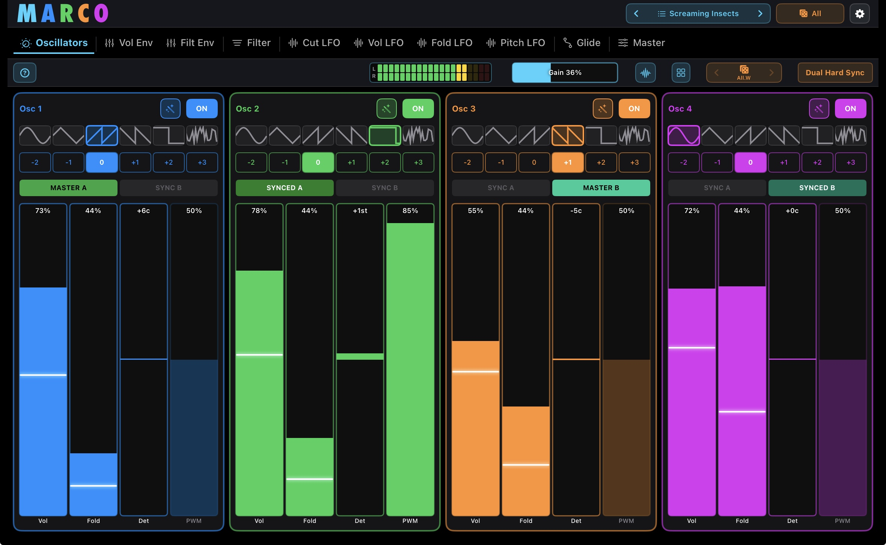
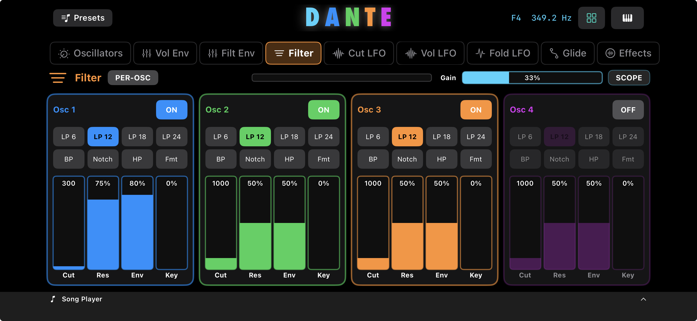
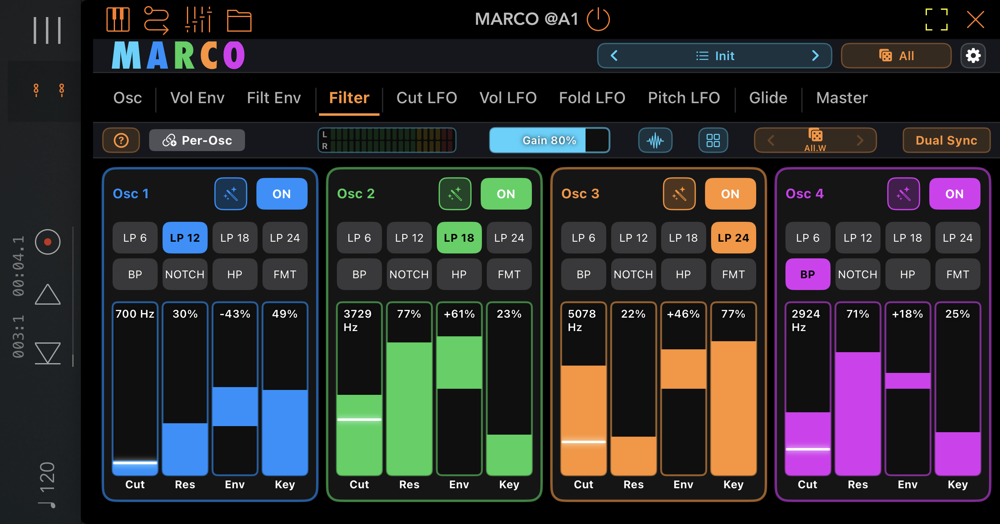
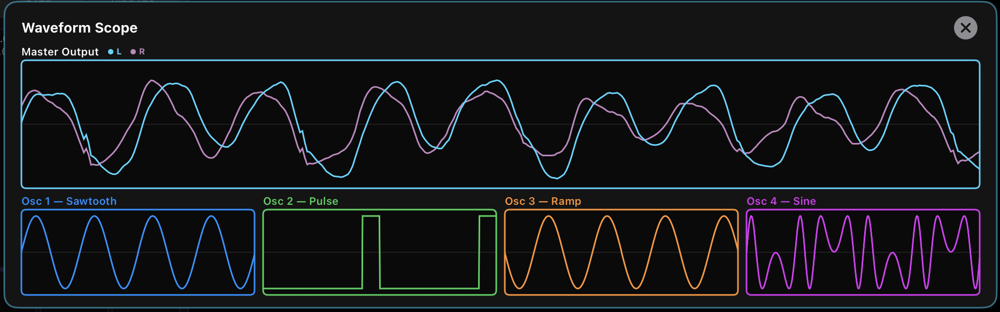
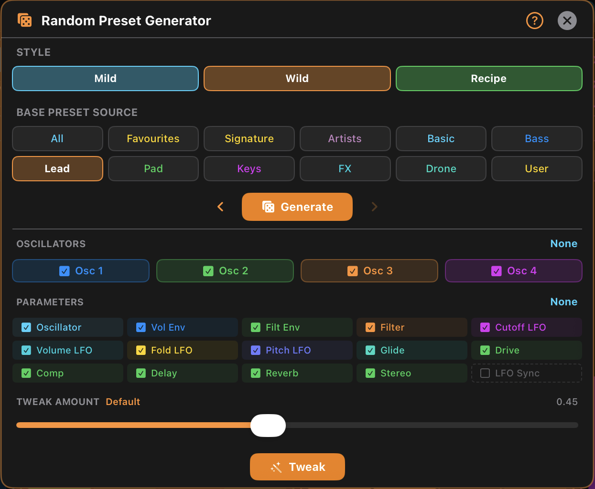
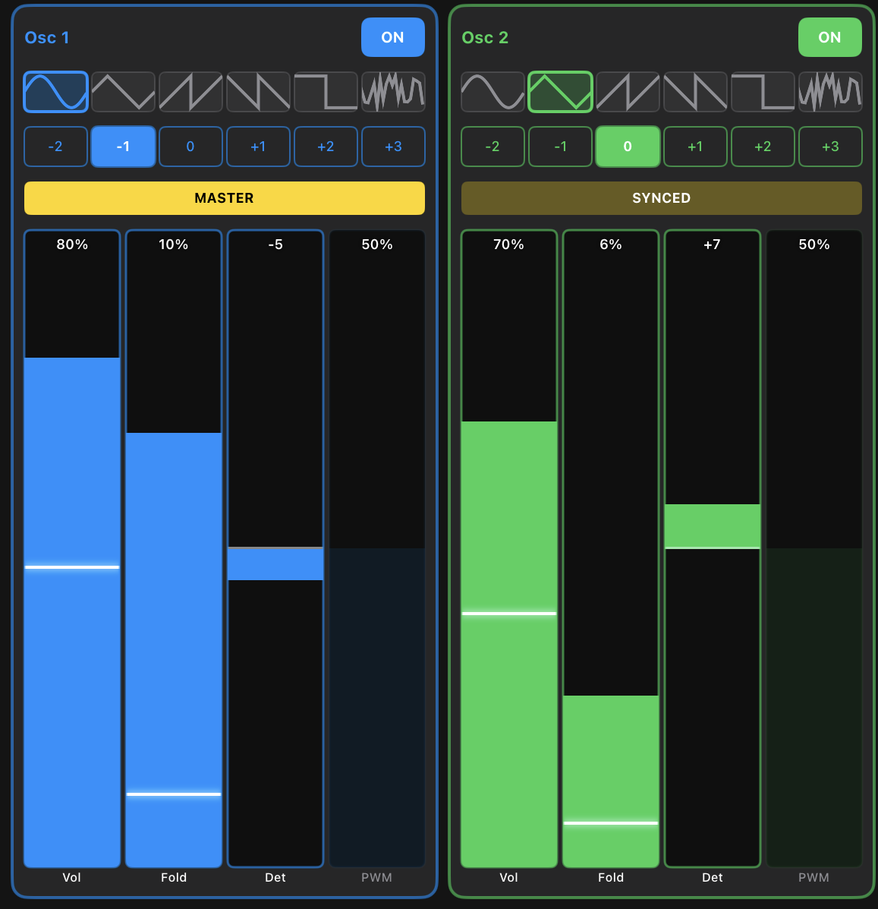
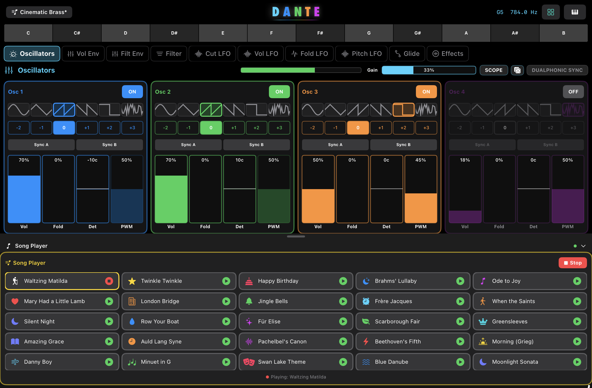

Sounds nobody else can make. From a synth anyone can play.
What if having full control was actually the easy part?

A new kind of synthesizer — and one anyone can play. Dante is the first Dualphonic Sync Synthesizer, with two parallel hard-sync chains instead of one. The result: shimmering harmonics, screaming overtones, evolving timbres no other iOS synth can give you. And you don't need to understand any of that to enjoy it. Hit the dice and Dante hands you a brand-new sound. Tweak it. Save it. Or dive deeper when you're ready. Whether it's your first synth or your fortieth, Dante meets you where you are.
A new Dualphonic Sync button cycles through every valid sync combination. Pair it with the Generate dice and things get wild fast — territory you simply haven't heard before on iOS.
Each oscillator can join chain A, chain B, or run free. Two parallel sync arrangements where every other synth gives you one — opening up sound combinations only Dante can make.
One tap of the Dualphonic Sync button steps through every valid sync combination. Find new sonic territory in seconds.
Combine with the musical random preset generator for instantly unfamiliar, never-heard-before sounds.
Among 100+ presets, ten Signature sounds showcase exactly what Dualphonic Sync can do.
This isn't layering. This isn't "multi-oscillator" in the usual sense. Dante gives you four fully independent sound engines — each with its own complete signal path — something you won't find in hardware or software synths.


Its own waveform, filter, envelopes, LFOs, effects.
Run a saw through a notch while Osc 1 holds a sine.
Add a slow wavefold LFO without touching the others.
Detune, glide, and modulate completely on its own.

Visual feedback with per-oscillator scopes — see exactly what each engine is doing.
Most randomisers create chaos. Dante creates ideas. The built-in preset generator is musical, targeted, and controllable.
Go from "that's interesting" to "that's the sound" in seconds.

“The scope thing is pretty cool. The randomizer though is something to behold.”
“This is one of those apps that produces some really fantastic sounds using the random preset generator.”
Dante gives you serious sound design power without complexity getting in your way. A consistent UI across all oscillators means once you know one, you know them all.
Beginners can explore and create instantly. Advanced users can go deep without friction. No hidden layers. No menu diving. Just sound design that flows.

The white lines on each parameter slider move up and down in real time, showing exactly how an LFO is impacting that parameter — no guesswork, no hidden modulation.
The standalone iPad, iPhone and Mac apps include a built-in music player featuring public domain tracks — designed for quick experimentation and sound auditioning. MIDI input is also supported, so you can drive Dante from any controller or sequencer.
Load a preset, hit play, and hear how it sits in real music — without setting up a Host.
Great for kids and parties too — hear Happy Birthday, Twinkle Twinkle or Für Elise reimagined through wild, evolving synth sounds at the tap of a button.

Whether you're sketching ideas or building a finished track, Dante ships with the tools you need.
Including 10 Signature sounds built around Dualphonic Sync. Import / export supported.
High-quality effects per oscillator. Delay is clock-synced to your host.
Every LFO — Cut, Vol, Fold and Pitch — locks to host tempo for tight, in-time modulation.
Full Note + CC mapping, plus dedicated MIDI for Generate, Tweak, Dualphonic Sync, and opening Scope, Preset Browser, XY Pad and the Random Generator.
Play immediately on iPad standalone — no controller required.
Instant inspiration with public-domain tracks (standalone).
Drop into AUM, Loopy Pro, Drambo, Logic, GarageBand, Cubasis and more.
Dante removes that limit.
Dualphonic Sync. Full control per oscillator. Intelligent randomisation that keeps creative momentum going. A workflow that keeps you in the music.
Create sounds no one else can.
Available on the Apple App Store for iPhone, iPad, and Mac.
Download on the App Store